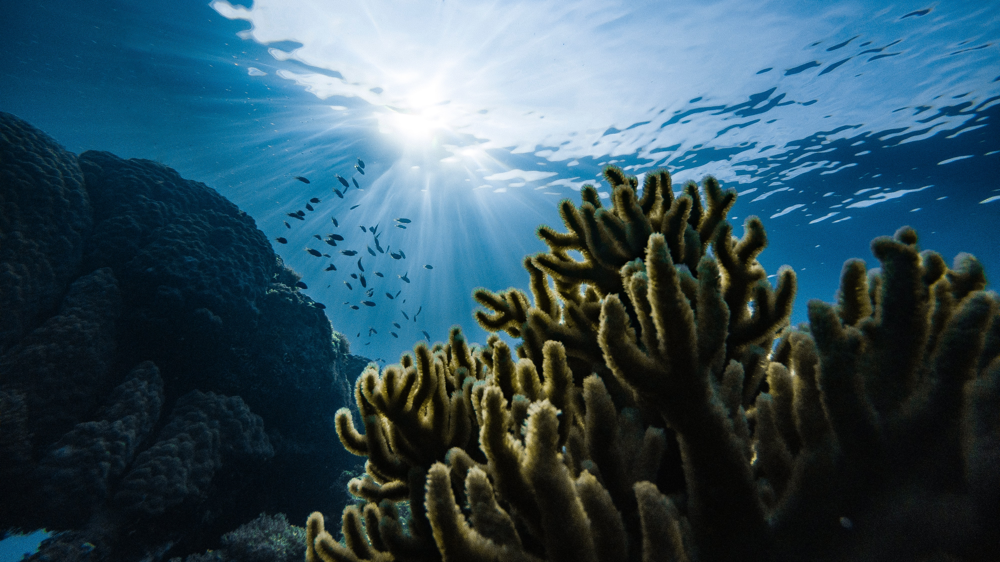

Eco-friendly Beach Activities
- 
Sports and underwater activities
Activities that do not involve motors such as snorkeling, surfing, or rowing are great ways to enjoy the ocean without causing noise pollution.
(Image by Marek Okon) -
Use Designated Paths
If you see any paved ways or wooden walkways, use those to roam on the beach rather than sand dunes. The dunes are used as habitats for birds and rare plants, so it is best to leave them as they are.
(Image by Rachel Cooper) 
Wildlife
Beaches are diverse ecosystems of their own, so you could get the chance to see some pretty interesting wildlife during your visit! Ensure that you keep yourself at a distance however, and avoid feeding them your food. The wonderful creatures' digestive systems may not be able to digest human food and may make them dependent on humans as a food source.
(Image by Thomas Lipke)-
Fishing
Ask a local fisher to fish if they would like to fish with you. You may learn some interesting information about the beach you are on and can catch fish of the season. If you wish to dine on seafood, this is a great opportunity to go to local restaurants that serve seasonal fish and try new cuisines.
(Image by Amit Uikey)